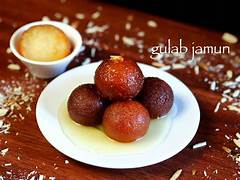

Home
GulabJamun

Description
Gulab Jamun is a classic Indian sweet made from milk powder or khoya, shaped into small balls, fried until golden brown, and soaked in flavored sugar syrup. The name comes from 'gulab' (rose) and 'jamun' (black plum), referring to the shape and color of the dessert.
This dessert is soft, juicy, and melts in your mouth. It is popular during festivals, celebrations, birthdays, and family gatherings. It tastes best when served warm and garnished with nuts.
Ingredients
- Milk powder
- Maida / All-purpose flour
- Baking soda
- Ghee or oil (for frying)
- Milk (to knead)
- Sugar
- Water
- Cardamom powder
- Rose water or saffron strands (optional)
- Chopped dry fruits for garnish
Steps
- Mix milk powder, maida, and baking soda in a bowl.
- Add milk little by little and knead gently into a soft dough.
- Shape small smooth balls without cracks.
- Heat oil or ghee on low flame and fry the balls until golden brown.
- Boil sugar and water with cardamom to make sugar syrup; add rose water or saffron if using.
- Soak the fried balls in warm sugar syrup for at least 1 hour.
- Serve warm and garnish with crushed nuts.